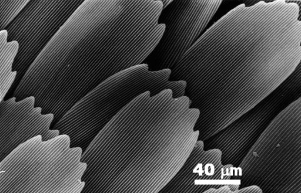
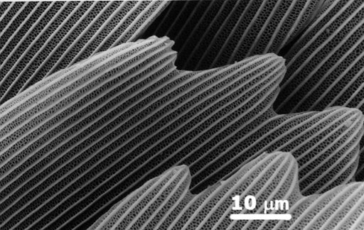
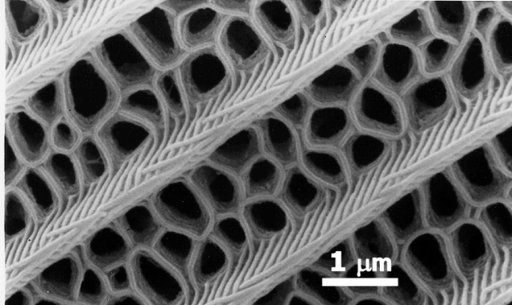
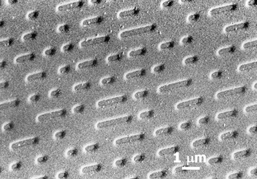
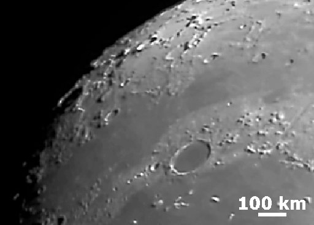
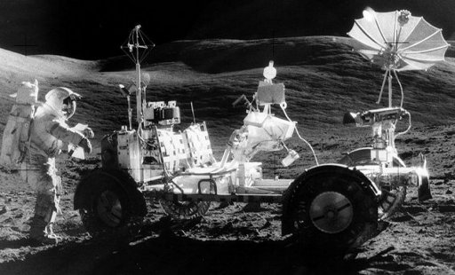

Cât de aproape mai poţi vedea clar?
 Activitatea experimentală 1
Activitatea experimentală 1
Determină distanţa minimă de la care mai poţi vedea clar. Lucrează în echipă.
Pasul 1. Apropie lent de ochi o carte, privind atent textul unei pagini.
Când începi să vezi textul neclar, îndepărtează lent cartea până când vezi textul din nou foarte clar.
Semnalează−i celui (celei) cu care lucrezi să măsoare cu o riglă distanţa dintre ochii tăi şi pagina cărţii.
Pasul 2. Inversaţi rolurile.
Pasul 3. Notează−ţi distanţa mimină de la care mai poţi vedea clar şi compar−o cu cea măsurată de ceilalţi.

Pentru ochiul normal al unui adult, distanţa minimă de vedere clară este 0,25 m.
La copii şi tineri, această distanţă minimă de vedere clară este mai mică (0,10 m...0,20 m). Odată cu vârsta, distanţa minimă de vedere clară
creşte.
 Provocarea 1
Provocarea 1
Cât este mărimea celui mai mic detaliu pe care îl poţi vedea clar?
Datorită limitării unghiulare de un minut de arc şi a celei de distanţă minimă de vedere clară, un adult cu vedere normală nu poate vedea detalii
mai mici de aproximativ 7 sutimi de mm (7 · 10-5 m).
O mulţime de detalii ale acestei lumi ar rămâne nevăzute şi neştiunte, datorită limitărilor văzului.
Succesiunea de imagini din figurile 1, 2 şi 3 reprezintă detalii din ce în ce mai fine ale solzilor aripii unui fluture.

Fig. 1.
Solzii aripii unui fluture.

Fig. 2.
Detalii de patru ori mai fine.

Fig. 3.
Detalii de încă zece ori mai fine.
Bara albă din figura 1 corespunde unei lungimi de 40 mm (1 mm = 10-6 m),
mai mică decât cel mai mic detaliu pe care l−am putea vedea, iar uimitoarea dantelărie din figura 3 are detalii mai mici de 1 mm!
Astfel, limitaţi de văzul nostru mult prea puţin fin, n−am fi fost niciodată capabili să înregistrăm muzică şi programe de calculator pe suprafaţa
unui CD (figura 4).

Fig. 4.
Detalii ale suprafeţei unui CD.
Nu doar detaliile fine ar fi rămas ascunse privirilor noastre!
Provocarea 2
Cât este mărimea celui mai mic detaliu pe care îl poţi vedea pe suprafaţa Lunii, aflată la 380.000 km de tine?
N−am fi ştiut nici de existenţa craterelor şi a munţilor de pe Lună (figura 5).

Fig. 5.
Detalii ale suprafeţei Lunii.
Astfel, neştiind ce am găsi pe suprafaţa Lunii, nu ne−am fi aventurat niciodată într−acolo (figura 6)!

Fig. 6.
Astronaut pe Lună, în timpul misiunii Apollo 17.